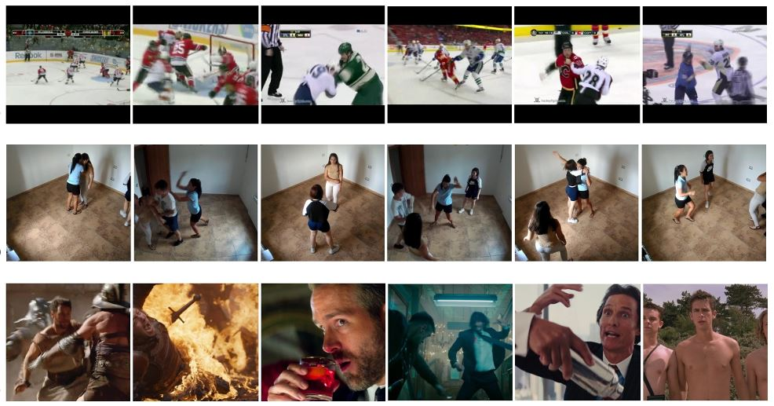
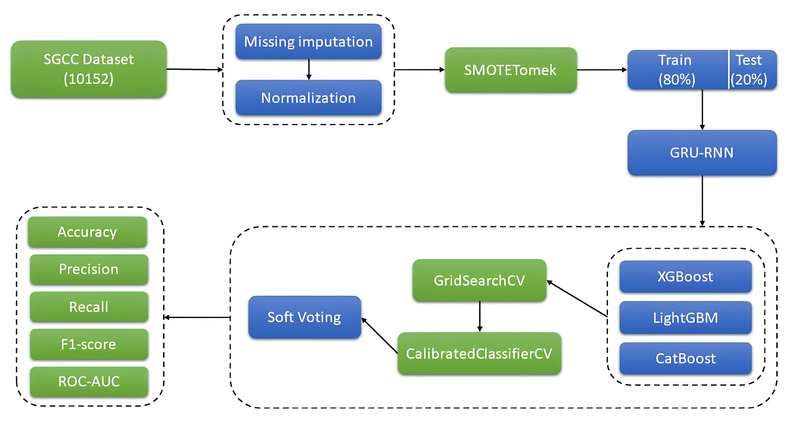

SolarDT
Development of an Artificial Intelligence Enabled Digital Twin of a Solar Photovoltaic Plant to Enhance Renewable Penetration in Power Grid of Bangladesh
Electrical Engineering Graduate | Research Assistant
Prospective MS/PhD ApplicantResearch interests: Machine Learning, Digital Twin, Power Systems, Smart Grid, Renewable Energy and Power Electronics.
Md. Sabbir Hossain Molla holds a BSc in Electrical, Electronic and Communication Engineering (EECE) from the Military Institute of Science and Technology (MIST). He currently works as a Research Assistant at the Smart Grid & Sustainable Energy Transition Lab (SET Lab), Department of EECE, MIST, where he focuses on developing an AI-enabled digital twin for solar photovoltaic (PV) systems.
His broader research experience includes machine learning-based electricity theft detection, smart grid security, and large-scale electricity consumption analysis. These projects have involved data-driven analysis, machine learning model development, research design, and technical documentation. At SET Lab, he also mentors three Undergraduate Research Assistants (URAs), guiding them in literature review, research planning, and technical implementation. He leads the team in the project "Adaptive Event-Driven Sampling for Low-Cost Smart Grid Monitoring Using ESP32."
His research interests lie in intelligent power and energy systems, artificial intelligence and machine learning, renewable energy integration, digital twins, power system security, and data-driven modeling, and he is keen to extend this work to power electronics for renewable integration. He plans to pursue an MS and subsequently a PhD in electrical engineering, aiming to develop advanced methods for reliable, efficient, and sustainable power systems.
Development of an Artificial Intelligence Enabled Digital Twin of a Solar Photovoltaic Plant to Enhance Renewable Penetration in Power Grid of Bangladesh

Generalising Violence Detection with a New Near-Real-World Violence Dataset

SecureGrid: A Robust Voting Ensemble Model for Non-Technical Loss (NTL) Detection in Smart Meter Data